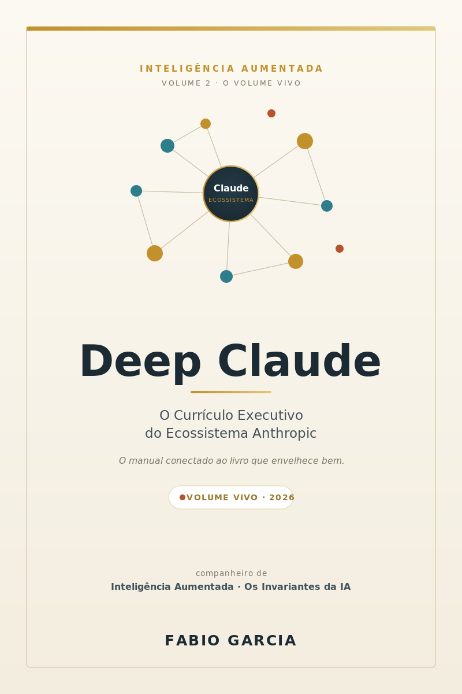

Fundamentos
Capítulos 1 a 7. Como Claude funciona, anatomia da conversa, modelos, quando usar e quando não, tokens, contexto e personas
Série Inteligência Aumentada · Livro 2 · Gratuito
Currículo Executivo do Ecossistema Anthropic
Os Invariantes aplicados a um ecossistema inteiro.
Quarenta e sete capítulos sobre operar Claude em escala corporativa, da primeira conversa até governança, ROI e compliance. Mais o companion executável que transforma cada capítulo em artefato de pipeline.

O que é isto
A documentação oficial responde como usar. Este livro responde quando usar, quem assina embaixo e o que medir depois.
O livro carrega o que dura, frameworks de decisão, arquiteturas de aplicação, vocabulário operacional e fluxos de adoção institucional.
As pastas práticas carregam o que muda, modelos vigentes, preços, benchmarks, skills versionados, MCPs de referência e templates de governança.
O Apêndice Vivo é revisado mensalmente, com data declarada. Nenhum número entra no livro fingindo ser permanente.
O currículo
Do primeiro contato com Claude até governança formal, ROI e compliance. Cada bloco fecha um nível de maturidade de adoção.
Capítulos 1 a 7. Como Claude funciona, anatomia da conversa, modelos, quando usar e quando não, tokens, contexto e personas
Capítulos 8 a 21. Cowork, Claude Code, web, desktop, mobile, Projects, Artifacts, Design, Research, voz, tarefas agendadas, Team e Enterprise
Capítulos 22 a 36. API e SDKs, tool use, extended thinking, prompt avançado e caching, embeddings, RAG, MCP, skills, subagents, computer use, vision, evals e LLMOps
Capítulos 37 a 41. Jurídico, saúde, financeiro, SaaS e suporte, RH, marketing e educação
Capítulos 42 a 47. Governança executiva, adoção, ROI e métricas, segurança, compliance, LGPD e o repositório acompanhante
Para quem é
O livro traz trilha de leitura por nível, então dá para começar por onde faz sentido em vez de ler linearmente.
CTO e head de tecnologia que precisa montar comitê de IA, decidir entre modelos por caso e construir AI cards por sistema.
Engenheiro que vai desenhar RAG, MCP, subagents e avaliação com rastreabilidade e rollback.
Jurídico, compliance e governança, com runbook de incidente, LGPD e trilha de auditoria.
Baixar e ler
Os links apontam sempre para a edição mais recente, então podem ser compartilhados sem envelhecer.
O livro completo em página única, abre direto, sem download e sem cadastro. Funciona no celular.
Abrir o livroPara leitura offline, impressão e anotação. Diagramação de livro, com sumário navegável.
Baixar agoraApêndice Vivo com números calibrados mensalmente, skills, MCPs, prompts setoriais e templates de governança.
Ver no GitHubA série
O Livro 1 estabelece o método vendor-neutral. O Livro 2 aplica esse método a um ecossistema inteiro. Dá para ler em qualquer ordem, mas a sequência foi pensada.

Livro 1 da série
Nove princípios que continuam verdadeiros quando o modelo da moda for substituído. Um método de julgamento, decisão e governança de IA que não pertence a nenhum fornecedor.